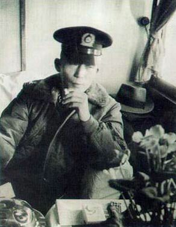
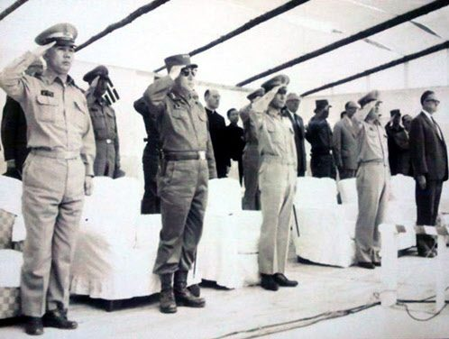
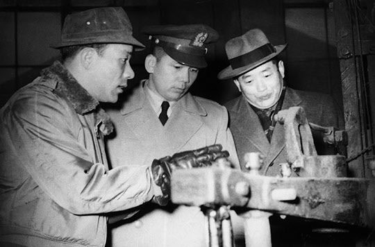

보도일 2014-08-25출처 조선일보 프리미엄조선 연재
박정희는 호랑이 등에 완전히 올라탔다. 박태준도 그 뒤에 앉았다. 전진을 멈출 수도 스스로 내릴 수도 없는, 험난한 앞길이 기다리고 있었다.
문제는 실력이었다. ‘절망과 기아선상에 허덕이는 민생고를 시급히 해결하고 국가자주경제 재건에 총력을 경주한다’라고 천명한, 가장 중요한 그 혁명목표에 도달할 실력을 갖추었는가. 그가 말한, 그들이 말한 ‘총력’에는 어떤 실체가 있는가.
만약 그 총력을 갖추지 못한다면 아무리 신성하고 순정한 사명의식을 품었다고 해도 끝내 그것을 실현하지 못함으로써 박정희의 쿠데타는 정권 찬탈의 저급한 쿠데타로 결말날 것이요, 만약 그 총력을 갖추게 된다면 그 사명의식을 구체적 현실체로 실현함으로써 박정희의 쿠데타는 정권 찬탈을 넘어 마침내 시대적 혁명으로 거듭날 것이었다.
그 총력이란 무엇보다도 사람들의 힘이다. 자본이 없고 기술이 없어도 사람들이 능력을 갖추고 있으면 어떤 목표든 성취할 수 있다. 이것이 인간사회의 특징이다. 일단 정권을 잡은 박정희와 그의 군인들이 국가통치를 위하여 널리 민간 쪽에서 인재를 발탁해 쓴다고 하더라도 우선은 군부가 민간에 못잖은 인재풀을 소유하고 있어야 했다. 이러한 관점에서 볼 때, 박정희는 행운의 카드를 쥐고 있었다. 역설적이게도 그것은 그가 ‘양놈들’이라 부른 미국에서 제공한 것이었다.
창군 당시부터 1960년 말까지 한국 육군만 따져도 도미(渡美) 유학 장병 누계는 7,049명으로, 외무부 공무원의 도미 유학자 비율보다 10%쯤 더 높았다고 한다. 참모학교, 화학학교, 공병, 군의, 병기, 병참, 통신, 부관, 경리, 군종(軍宗), 기갑, 정훈, 헌병, 수송, 심리전, 항공, 군수, 여군, 법무……. 이 다양한 이름들은 그만큼 다양한 선진지식들이 한국 군부에 실재하고 있었다는 뜻이다.
특히 그들 대다수는 박정희와 박태준이 그랬던 것처럼 세계의 흐름을 제대로 이해하고 조국을 개조해야 한다는 울분을 가슴에 품고 있었다. 그 수치, 그 지식, 그 울분이 5‧16의 박정희에게는 보이지 않는 힘이었다.

산업화, 민주화, 사회제도 등 근대화의 기반을 갖추지 못한 ‘20세기의 세계 최빈국 대한민국 1961년’에서 선진국 유학 인력이 국가재건과 국가개조의 정책수행 과정에 얼마나 중요한 사회적 자산인가를 더 쉽게 이해하기 위해서는 그보다 대강 100년 앞에 있었던 일본의 사례를 참조할 필요가 있다. 1868년에서 1902년까지 일본이 발급한 유학생(미국, 유럽) 여권은 11,248건에 달했다.
그 기간에 조선이 공식적으로 발급한 여권은 몇 건이었는가? 민간인에게 발급한 여권이 단 한 건이라도 있었는가? 그 기간에 이뤄진 여권 발급 건수의 어마어마한 격차는 고스란히 일본과 조선 간 근대화의 격차, 국력의 격차로 이어지고 굳어졌다.
1961년 7월 중순, 국가재건최고회의 전체회의가 열렸다. 중대한 회의였다. 정소영, 김성범, 백용찬 등 민간에서 발굴한 경제전문가 3인이 주도적으로 작성한 ‘최고회의 종합경제재건계획’에 대한 브리핑이었다. 백용찬은 박태준이 천거한 사람이었다.
그들은 ‘불균형 성장정책’을 위한 두 가지 전술적 목표를 제시했다. 첫째 수출주도형에 의한 2차산업 우선육성과 모방성장 방식에 의한 고도성장, 둘째 조립방식에 의한 수출증대와 고용증대. 조립방식은 라디오를 예로 들어 설명했다. 라디오 생산에 드는 수백 가지 부품과 기초자재를 생산할 능력이 없으니 우선은 부품을 수입해 와서 완성품으로 조립하여 수출하고, 단계적으로 국산화 비율을 늘려 순수 국산 라디오를 생산하자.
박정희가 함박웃음을 머금고 일어나 박수를 쳤다. 그것은 ‘5개년 종합경제기획안’과 ‘제1차 경제개발 5개년계획’의 기초였다. 작성 과정에는 이승만 정부의 ‘경제개발 3개년계획’과 이를 비판적으로 검토해 새로 작성한 장면 정부의 ‘제1차 경제개발 5개년계획’이 참고자료로 활용되었다. 하지만 기존 두 계획안에 대해 정소영은 “검토는 했지만 이용가치가 없어 새 계획을 짰던 것”이라고 밝혔다.

박정희와 최고회의 군인들의 박수 속에서 한국경제정책의 핵심은 ‘수출주도형’으로 확정되었다. 7월 22일, 경제기획원 창설. ‘한강의 기적’을 이끌 두뇌가 탄생했다. 그러나 앞길은 캄캄했다. 1961년 한국경제의 각종 수치들이 그것을 알려준다. 1인당 GNP 83달러, 국내 저축률 3.9%, 투자율 13.1%, 수출 4088만 달러, 수입 3억1600만 달러. 한마디로 참담했다.
무엇보다도 자금(밑천) 확보가 가장 절실하고 시급했다. 더 이상 경제개발계획을 ‘찬란한 문서’로만 처박아둔다면, 그들의 혁명공약은 거창한 거짓말로 나가떨어질 것이었다. 일본에 가서 식민지 배상금도 받아내고, 미국에 가서 원조 아닌 돈이 나올 구멍도 알아보고, 라인강의 기적을 이룬 분단국가 서독(독일)에 가서 차관 교섭도 해봐야 했다.
8월 10일 박태준은 준장으로 진급했다. 박정희는 8월 12일 ‘정권이양 시기에 관한 성명’을 발표했다. 국가재건최고회의가 ‘혼란 속의 안정’을 찾아가는 중이었다. 하지만 군정 안에는 인간적인 고민이 있었다. 특히 반혁명 대열에 섰던 장군들을 어떻게 다룰 것인가. 고심을 거듭하는 의장 박정희에게 비서실장 박태준이 건의했다.
“혁명의 취지와 목표를 구현해 나간다면 언젠가는 화해하고 협력할 수도 있지 않겠습니까? 미 대사관의 협조를 얻어 미국으로 보냈으면 합니다. 미국 대학에서 공부하는 길을 열어준다면, 후일에는 국가에도 도움이 되지 않겠습니까?”

몇 달 더 지나 5‧16에 반대한 장성들이 미국으로 떠난다. 이한림, 강영훈, 김웅수 그리고 장도영……. 뒷날 조국으로 돌아와 정부에 협조한 이도 있고, 미국에 남아 대학 교수로 살아간 이도 있다.
국가재건최고회의가 기틀을 잡아가지만 ‘정권이양 시기에 관한 성명’이 단적으로 보여주듯 신생 군정에는 ‘정치적’으로 다뤄야할 사안들이 급증하고 있었다. 박태준은 한국의 정치적 환경에 잘 적응할 정치적 적성을 갖춘 사람이 의장 비서실장을 맡는 것이 좋겠다고 판단했다. 이러한 뜻을 그는 광복절 즈음에 박정희에게 건의했다.
9월 4일 박태준은 국가재건최고회의 비서실장에서 재정경제위원회 상공담당 최고위원으로 자리를 옮겼다. 드디어 박태준이 국가경제의 일선에 나서게 되는 그 인사는 국가적으로나 개인적으로나 중대한 의미를 지닌 것이었다.
박태준의 능력을 ‘정치’ 방면으로 활용하지 않고 5‧16의 최고 명분이자 가치라 할 ‘경제’ 방면으로 활용하겠다는 박정희의 포석, 이것은 5‧16을 통해 어느 누구보다 크게 돋보인 김종필을 박태준과 나란히 세울 때 확연히 대비된다. 박태준의 의사를 받아들인 박정희의 용인술이 박태준을 경제 방면으로 배치한 그 지점은 ‘박정희와 박태준의 만남’을 역사의 어두운 그늘에 들지 않게 만든 출발점이기도 했다.